Free
computer Tutorials
|
Free
computer Tutorials
|
|
 back back |
Stay at Home and Learn | ||||
Toolbars in Windows 7You can add Toolbars to your taskbar area. A toolbar is a list of shortcuts to favourite areas of your computers. Right click the Taskbar to see the following menu: 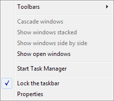 Select Toolbars to see the built-in Windows 7 ones: 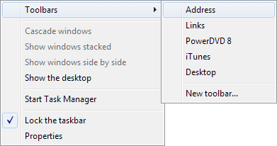 As you can see, there are entries for Address, Links, PowerDVD 8, Desktop, and New toolbar. (Unless you have the PowerDVD programme on your computer, you won't see this one.) To see what they do, click the first one, Address. You should see the following appear in your Taskbar: 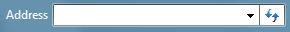 This is similar to the Search bar on the Start menu. You can type a web site address in the text box (but see the warning below, before you do). When you click the blue double arrows it will launch your browser and navigate to the website you typed. Or just navigate to areas on your computer. Click the black down arrow to see some shortcuts: 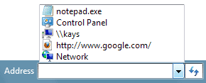 Click on a shortcut to launch that particular programme or dialogue box. The entry for "notepad.exe" in the image above is there because we typed it in the Address bar. When we pressed the enter key on the keyboard, this programme was then launched. If you know the name of a programme on your computer, type it in the address bar to open it up.
WARNING: Deleting Items From the Address BarWhen you type a web address in the Address Bar above, it will add it there on a permanent basis. If you were to close down the computer and opening it again, the address will still be there. This could be quite problematic, if the web address is a sensitive one. Sadly, Microsoft haven't provided an easy way to delete single URLs from the Address bar above. Doing so means opening and editing the Windows registry, which is beyond the scope of this artcile. However, you can clear all the entries in the Address bar quite easily. Click the Start button. From the Start menu, select Computer from the list on the right hand side. You should see an Explorer window open. The Address bar is at the top, and will say Computer: 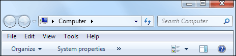 DON'T left click inside this Address bar, but right click. (It's easier if you simply right click the word "Computer".) You're looking for a short menu to appear. It will have four items on it: Copy Address, Copy Address as Text, Edit Address, and Delete History. This one: 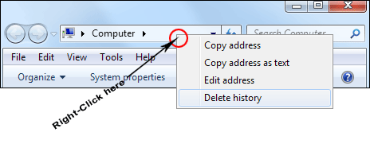
The Links Toolbar ItemThe Links item on the menu refers to the Favourites Bar
folder that appears in Internet Explorer. These are shortcuts to websites
you've added. The Links toolbar looks like this, when you add it to
the Taskbar: 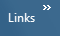 Click the double white arrows to see a menu appear: 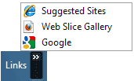 But you can also right-click the word "Links". A new menu appears: 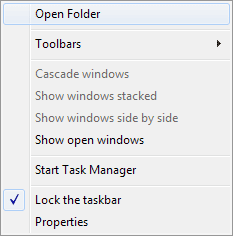 Select "Open Folder" to see the shortcuts: 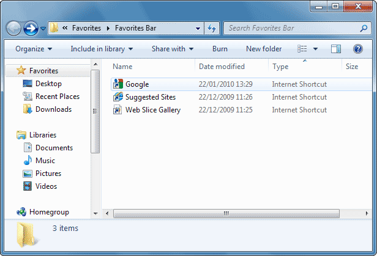 You can add your own shortcut items to the favourites bar folder. In the image below, we've right-clicked on the Documents folder under Libraries, and selected Copy: 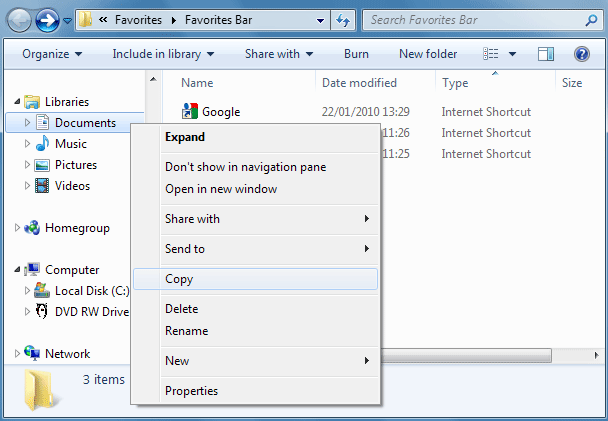 We've then right-clicked inside of the favourites bar folder and selected Paste Shortcut: 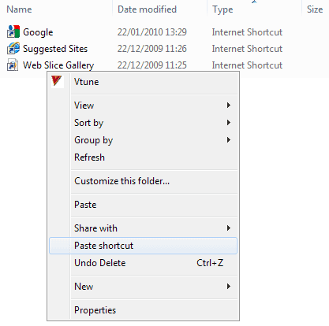 The Documents folder will then appear as a shortcut on the Links bars: 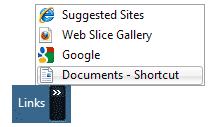
Creating New ToolbarsAt the bottom of the toolbar menu there is an item for
"New toolbar". This allows you to create a toolbar of your
very own: 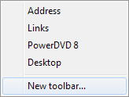 When you click on "New toolbar", you'll see an Explorer window open. Select a folder to add to your new toolbar. In the image below, we've selected the Pictures folder from the list on the left: 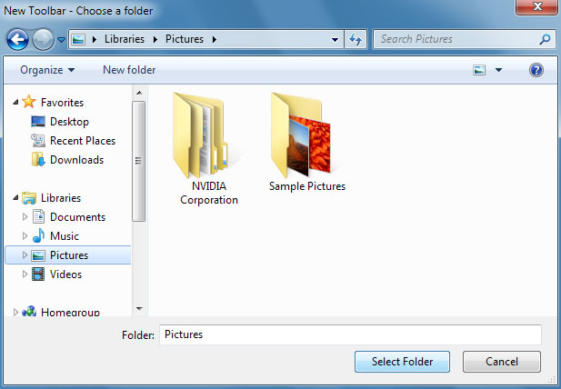 The Folder text box at the bottom then says "Pictures". Click the Select Folder button. Your chosen folder will appear on your Taskbar at the bottom of your screen: 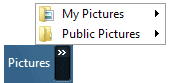 You now have a handy shortcut to any images that you save in the Pictures folder. In the next lesson, we'll take a look at the Start button.
The Windows 7 Start Button --> |
|||||
|